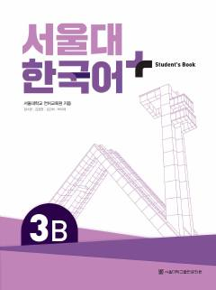

SNSeul Milliy Universitetining koreys tili o'rganish uchun mo'ljallangan o'rta darajadagi darsligi.
Ushbu darslik Seul Milliy Universitetining koreys tili dasturi doirasida ishlab chiqilgan bo'lib, o'quvchilarga til ko'nikmalarini tizimli ravishda rivojlantirishga yordam beradi. Kitob o'rta darajadagi o'quvchilar uchun mo'ljallangan bo'lib, grammatika, leksika va muloqot mashqlarini o'z ichiga oladi.